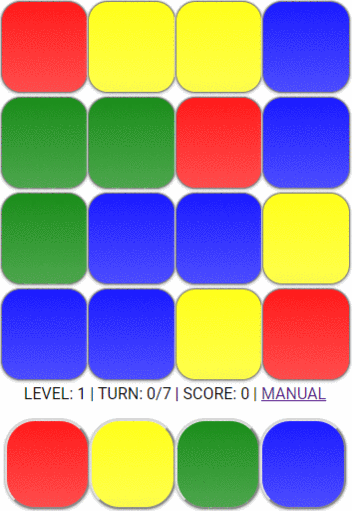

Your goal is to fill out the entire field with the same color. The game always starts with the top left tile. You will have to change th is old color's tile/s to one of its directly neighbouring new color tile/s. You can switch the color of tiles by clicking on a color from the bar at the bottom. There is a certain amount of maximum turns for each level. A turn means changing the color of tiles. You lose the game, if you don't have any turns left. If you win a level, the next one will be loaded automatically
